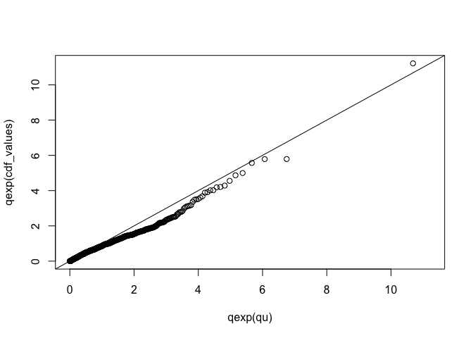

SPQRX (Semi-Parametric Quantile Regression for eXtremes) performs bulk-and-tail density regression using neural networks. The package implements the methodology from Majumder and Richards (2026), and is built around the keras3 library in R.
🚧 Warning!
This package is currently under development, and several functions might not work as intended.
Installation
You can install the development version of SPQRX from GitHub with:
# install.packages("devtools")
devtools::install_github("reetamm/SPQRX")A minimum working example of fitting an SPQRX model to housing data in Arkansas, US, is provided below.
library(SPQRX)
# Import the Arkansas housing prices dataset
dataset <- housing
y <- matrix ( dataset$price, ncol = 1)
x <- as.matrix(dataset[, c('bedrooms', 'batchrooms', 'squareFeet', 'lon', 'lat')])
data <- preprocessing.data(x, y, n.knots = 25, testing_ratio = 0.2, valid_ratio = 0.2)
x_training <- data$x_training
x_validation <- data$x_validation
x_testing <- data$x_testing
y_training <- data$y_training
y_validation <- data$y_validation
y_testing <- data$y_testing
p_a = 0.95
p_b = 0.999
c1 = 30
c2 = 5
hyperparameter <- create.packages.hyperparameter(p_a = p_a , p_b = p_b , c1 = c1, c2 = c2)
model.heavy <- fit_spqrx(input_dim = 5, hidden_dim = c(45 , 45), n.knots = 25, x_training = x_training,
x_validation = x_validation, y_training = y_training, y_validation = y_validation,
hyperparameter = hyperparameter)
# evaluate model fit
eval.plot.qexp(model.heavy, x_testing, y_testing)## Warning in mSpline(y, knots = knots, Boundary.knots = c(0, 1), intercept = TRUE, : Some 'x' values beyond boundary knots may cause ill-conditioned basis
## functions.
## Warning in mSpline(y, knots = knots, Boundary.knots = c(0, 1), intercept = TRUE, : Some 'x' values beyond boundary knots may cause ill-conditioned basis
## functions.
## Warning in mSpline(y, knots = knots, Boundary.knots = c(0, 1), intercept = TRUE, : Some 'x' values beyond boundary knots may cause ill-conditioned basis
## functions.
## Warning in mSpline(y, knots = knots, Boundary.knots = c(0, 1), intercept = TRUE, : Some 'x' values beyond boundary knots may cause ill-conditioned basis
## functions.
## Warning in mSpline(y, knots = knots, Boundary.knots = c(0, 1), intercept = TRUE, : Some 'x' values beyond boundary knots may cause ill-conditioned basis
## functions.